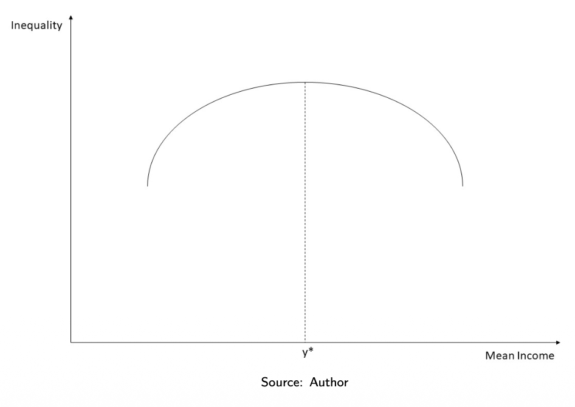
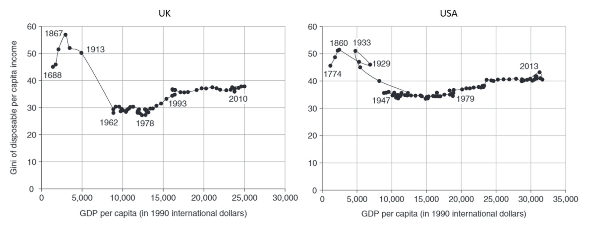
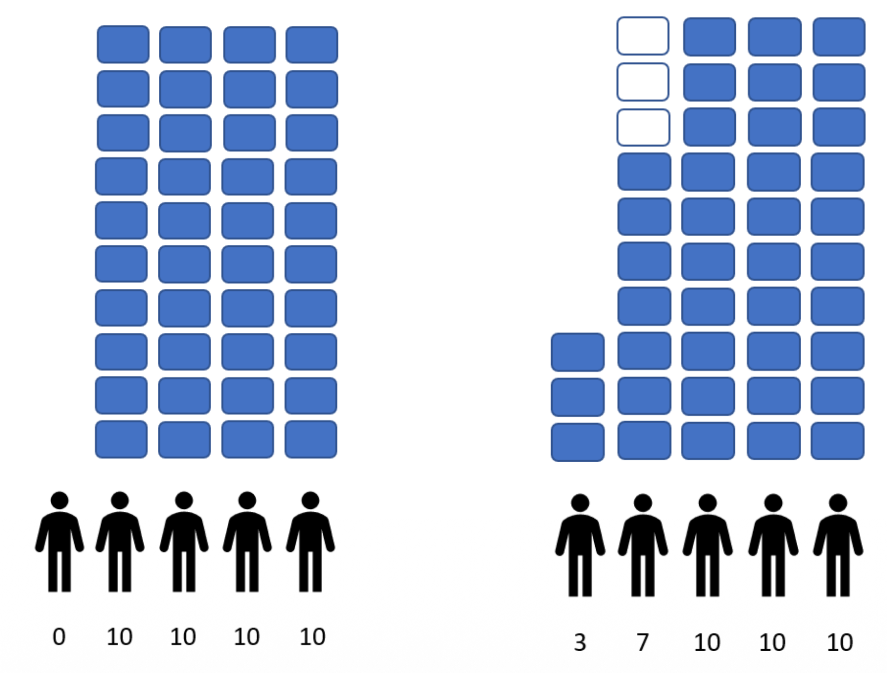
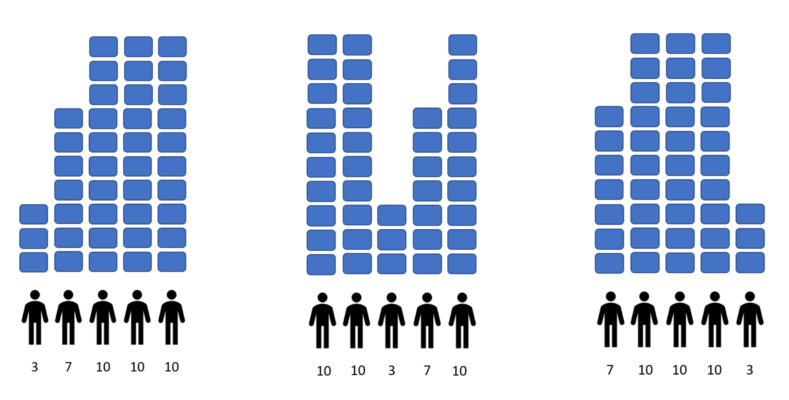
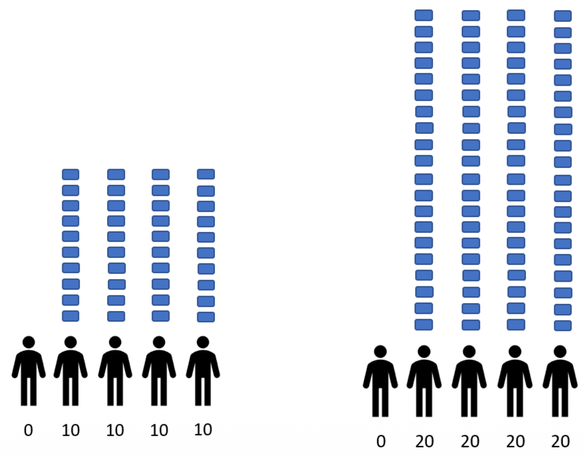

2.1 — Why Study Inequality & Theory
Chapter 2: Inequality
Why Study Inequality?
Inequality — the uneven distribution of income, wealth, or opportunities across individuals in a society — is one of the central topics in public finance. But why should economists and policymakers care about it? There are two fundamentally different types of motivation, and understanding the distinction between them is crucial.
🔧 Instrumental Reasons
Inequality matters because of its consequences. Even if you don't care about inequality for its own sake, you might care about the damage it causes. Stiglitz (2012) argues that increased inequality has measurable, negative effects on society:
- Decreased social cohesion — when the gap between rich and poor grows, trust between social groups erodes, political polarization increases, and the shared sense of community weakens.
- Increased crime — areas with higher inequality tend to have higher crime rates, because extreme poverty creates desperation and reduces social investment.
- Worse health outcomes — more unequal societies tend to have worse average health, even controlling for average income. The stress of relative deprivation affects physical and mental health.
In other words: even a selfish society should care about inequality, because inequality makes everyone worse off through these channels.
⚖️ Intrinsic Motivation
Inequality matters in itself, based on a broader theory of justice or social welfare. This is a normative position: we believe that a more equal distribution is morally better, regardless of its practical consequences.
The classic justification comes from utilitarianism: if we assume that the marginal utility of income is decreasing (an extra €100 matters much more to someone earning €500/month than to someone earning €50,000/month), then excessive inequality reduces the sum of total utility. Redistributing from the rich to the poor increases total welfare.
This distinction was formalized by Atkinson (2015): instrumental reasons focus on consequences; intrinsic motivation focuses on values.
The Kuznets Curve
The Kuznets Curve is the hypothesis that industrialization and economic development lead first to an increase and then to a decrease in inequality. The relationship between mean income and inequality follows an inverted-U shape (∩).

The mechanism behind this inverted-U shape works in three distinct phases:
-
Phase 1 — Low development, low inequality
In early-stage economies, most people work in the same sector (typically agriculture). Incomes are low for everyone but also relatively similar. There is little inequality because there is little variation — everyone is poor together.
-
Phase 2 — Industrialization, rising inequality
As the economy begins to industrialize, new, more productive sectors emerge. But only a minority of workers initially benefit from this new wealth — those who move into industry, those who own capital, those in urban areas. The rest remain in agriculture or traditional sectors with lower productivity. This gap drives a sharp increase in inequality. Industrial workers earn more than farmers; skilled workers earn more than unskilled; some regions develop faster than others.
-
Phase 3 — Advanced development, falling inequality
Over time, more and more workers move into the modern sector, benefiting from higher productivity and wages. Education spreads, social mobility increases, and governments introduce redistributive policies (progressive taxes, social insurance, public services). These forces compress the income distribution, and inequality falls. The point $y^*$ on the graph represents the level of mean income at which inequality peaks before declining.
The Kuznets Curve is a hypothesis, not a law. It describes a historical pattern observed in some industrializing countries, but it does not mean that economic growth automatically reduces inequality. As we'll see next, recent data tells a more complex story.
Kuznets Curve Revisited — UK & USA

When we look at the actual historical data for the UK and USA over several centuries, the picture is more complex than the simple inverted-U. Instead of a clean ∩ shape, we observe something closer to an N-shape or even an S-shape, with three distinct phases:
-
Rising inequality during industrialization (pre-1940)
In both the UK (especially around 1867–1913, during the peak of the Industrial Revolution) and the USA (1860–1929), inequality rose sharply. A small class of industrialists, entrepreneurs, and capital owners became extraordinarily wealthy, while urban workers and rural populations saw much smaller gains.
-
Falling inequality, mid-20th century
Between roughly 1913–1978 (UK) and 1933–1979 (USA), inequality fell dramatically. This was driven by a combination of powerful forces: progressive taxation, the expansion of the welfare state, universal education, strong labor unions, and the destruction of large fortunes by two world wars and the Great Depression.
-
Rising inequality again, since the 1980s
Starting around 1980, inequality began rising again in both countries — sharply in the USA, more moderately in the UK. The reasons include: globalization (outsourcing jobs), skill-biased technological change (technology favoring highly educated workers), declining tax progressivity (top tax rates were cut), financialization (capital income growing faster than labor income), and weakening unions.
Axioms of Inequality Measurement
Before we can measure inequality, we need to agree on what properties a good inequality measure should have. Economists have identified several fundamental axioms — logical requirements that any reasonable inequality index should satisfy. Understanding these axioms is essential because they determine which measures we can trust and how to interpret them.
Transfer Principle (Pigou-Dalton Principle)
Transfer Principle: If we transfer a given sum of money from any person A to any poorer person B — without changing their relative ranking — then inequality must fall. Conversely, a transfer from a poor person to a richer one must increase inequality.

This is the most intuitive axiom. Consider the two distributions shown above: $A = (0, 10, 10, 10, 10)$ and $B = (3, 7, 10, 10, 10)$. Both have the same total income (40), but in distribution B, 3 units have been transferred from the second person (10→7) to the first person (0→3). The poorest person is now less poor, and no one's ranking changed. According to the Transfer Principle:
This notation means "A has more inequality than B." The transfer from a richer person to a poorer one — without reversing their positions — reduced inequality. Any reasonable inequality measure must capture this.
Anonymity (Symmetry)
Anonymity Principle: All permutations of personal labels are regarded as distributionally equivalent. In other words, the level of inequality depends only on the set of incomes that exist in the society, not on who receives which income.

The image above shows three distributions that all contain exactly the same set of incomes: $(3, 7, 10, 10, 10)$. The only difference is which specific individual receives which income. If two people swap their incomes, the distribution hasn't changed — and neither should our measure of inequality.
This axiom matters because inequality measures must capture the dispersion of incomes in a society, not the identity of the individuals. Whether it's person 1 or person 5 who is poorest doesn't affect the overall level of inequality — what matters is that someone has a low income.
Scale Invariance
Scale Invariance: Multiplying all incomes by the same constant does not change the inequality measure. If everyone becomes twice as rich (or twice as poor), inequality stays the same.

The distributions above — $A = (0, 10, 10, 10, 10)$ and $B = (0, 20, 20, 20, 20)$ — have the same relative structure. Every income in B is exactly double the corresponding income in A. The ratios between individuals haven't changed: the poorest person still has 0%, and the others still share equally.
This axiom captures the idea that inequality measures should be about relative differences, not absolute income levels. A country where everyone earns double is richer, but not more or less equal. This is why indices like the Gini coefficient are expressed as ratios (between 0 and 1) — they measure relative inequality.
An important consequence: if all wages in a country doubled due to inflation (with prices also doubling), the Gini coefficient would not change. Scale invariance ensures that inequality measures aren't affected by the general price level or the unit of currency.
Decomposability
Decomposability: Total inequality can be expressed as the sum of inequality between groups plus inequality within groups.
This axiom is extremely useful for policy analysis. Consider a society with distribution $A = (0, 10, 10, 10, 10)$. We can split this into two subgroups: $B = (0, 10)$ and $C = (10, 10, 10)$. Total inequality in A can then be decomposed into:
Between-Group Inequality
The inequality that comes from differences between the group averages. Group B has mean 5, Group C has mean 10 — this difference contributes to total inequality.
Within-Group Inequality
The inequality inside each group. Within Group B, incomes range from 0 to 10 (high inequality). Within Group C, all incomes are 10 (zero inequality).
Why is this important? Because it lets policymakers identify where inequality comes from. For example: is inequality in France mostly driven by differences between regions (between-group), or by differences within the same city (within-group)? The answer determines which policies are most effective.
The four axioms above are the most commonly discussed, but there are others:
- Translation invariance: Adding the same constant to all incomes does not change inequality. (Note: this conflicts with scale invariance — you can't satisfy both simultaneously, so different indices choose different axioms.)
- Population principle: If we replicate the population (every person is cloned with the same income), inequality stays the same.
For a comprehensive treatment, see Cowell (2000), Measuring Inequality.